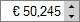
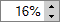

Version 3.0.0
Spinner |
||||||||||||||||||||||||||||||||||||||||||||
|
Developer’s Guide Home
Installation and Configuration Common Concepts Components Index Border Layout Panel Calendar Chart Command Button Command Link Composite Filter Confirmation Data Table Date Chooser Day Table Drop Down Field Dynamic Image Folding Panel For Each Graphic Text Hint Label Input Text Input Textarea Layered Pane Level Indicator Popup Layer Popup Menu Select Boolean Checkbox Select Many Checkbox Select One Radio Spinner Suggestion Field Tabbed Pane Tab Set Tree Table Two List Selection Window Focus Load Bundle Scroll Position Ajax Framework Validation Framework Tag Reference API Reference |
Key Features
Basic ConfigurationTo add the Spinner component to the page, use the <o:spinner> tag. The API for this tag is very similar to that of the standard <h:inputText> component. The edited value can be specified using the value attribute that corresponds to selected number, which can either be specified as a literal number value, or be as a value binding expression that references a java.lang.Number type value or one any of its subtypes, as well as the primitive number types (int, float, double, etc.) Here's a simple example of defining the spinner component: <o:spinner value="#{SpinnerBean.quantity}" />
This displays a Spinner component where the user can enter a number manually, and use the increase/decrease buttons on the field's right or press Up/Down keys to increase or decrease the currently entered value. By default, the step by which the value is increased and decreased is 1 though it can be changed using the step attribute. By default, the field doesn't restrict the range of numbers that can be specified in the Spinner component. Though you can specify minimum and/or maximum values using the minValue and maxValue attributes respectively. Here's an example of declaring a Spinner field that allows specifying a floating point number in range 0..1 with a step of 0.1: <o:spinner value="#{AjaxSettings.transparency}" minValue="0" maxValue="1" step="0.1"/> If minimum/maximum values are specified, it's possible to turn on the "cycled" mode for the Spinner by assigning true to the cycled attribute, which means that if the value reaches the specified minimum/maximum and an attempt to decrease/increase the value is made, the value "flips" to the other end of the range, e.g. maximum value is selected when decreasing a minimal value. It's possible to allow the user change Spinner field's value only by using the increase/decrease buttons (or Up/Down keys) and prohibit the expclicit value typing by assigning false to the typingAllowed attribute. You can specify the prompt text for the Spinner component using the promptText attribute. Like any JSF UIInput component, the Spinner component supports the standard validator, required, immediate and disabled attributes. For more information about them, see JavaServer Faces specification (section "EditableValueHolder"). Specifying the Number FormatThe Spinner component supports configuring number format to display a number. It is also assumed that the same number format is used by the user when typing a number. The <f:convertNumber> tag provides a range of options for customizing the appearance of numeric data, for instance it allows to specify number pattern using the syntax rules specified by java.text.DecimalFormat. <o:spinner value="#{SpinnerBean.discount}" step="0.5" maxValue="500" minValue="0" style="width: 80px;"> <f:convertNumber pattern="€ 00.000" locale="de"/> </o:spinner> The result spinner will look as follows:  <o:spinner value="#{SpinnerBean.rate}" step="0.01" maxValue="1" minValue="0" style="width: 60px;"> <f:convertNumber locale="en" type="percent"/> </o:spinner> The browser will display it as follows:  Please note that maxFractionDigits, maxIntegerDigits, minFractionDigits, minIntegerDigits attributes are not supported currently. Only an instance of NumberFormat can be specified as a converter for the spinner. Customizing AppearanceThe buttonAlignment attribute lets you specify whether the increase/decrease buttons are positioned to the right or to the left of the component. This attribute can take the "right" or "left" values only. The default location of the button is to the right of the input field. You can apply styles for any part of the Spinner component, both when it's in the normal and rollover states. The table below lists all of the styling attributes:
The following attributes allow customizing the button images:
Like the HTML <input> tag, <o:spinner> supports the title, tabindex, and accesskey attributes. These attributes are rendered for a nested input field of the DropDownField component. Client-Side EventsThe Spinner component supports all of the usual client-side event attributes applicable for all field components like the standard <h:inputText/>, such as onclick, ondblclick, onkeypress, onfocus, etc. Note that besides the standard functionality of the onchange attribute of being fired when the changed field loses focus, the onchange attribute is also fired when the value is incremented/decremented with Spinner's buttons or keyboard Up/Down keys. Client-Side APIAll client-side API methods for the Spinner component are listed in the following table:
|
|||||||||||||||||||||||||||||||||||||||||||
| © 2010 TeamDev Ltd. | ||||||||||||||||||||||||||||||||||||||||||||